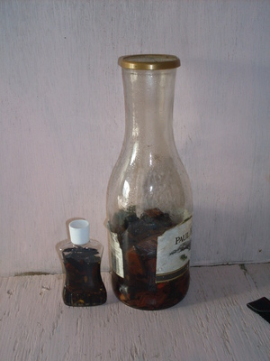

bawì 
/bawiʔ/
Var. bawwì
n.
“medicine”
1.
n.
medicine, including both liquids and tablets
Wrd.Gloss: medicine
O. Syn. delemetan
O. Syn. haplas
Eng. medicine; tablet
Tag. gamót
Ceb. tambal
Ilo.: ágas
OCM: Medical Therapy (757)
DDP: Medicine (2.5.7.2), Medicine (2.5.7.2)
Online dict status: -
Usage level: F
2.
v.
for someone (egbawì, migbawì/imbawì, bawii, agent, eg><ø-) to treat at someone else or something (medically) (egbawian, imbawian/migbawian/pigbawian, location, eg><an-)
Egbawì sikandin te ingkahat te uled.
He is treating someone bited by a snake.
Egbawian din ka palì ku.
He will treat my wound.
Eng. treat medically; treat, to; apply medicine; medicine, apply; heal
Tag. gumamót
Ceb. tambalan
Ilo.: agásan
OCM: Medical Therapy (757)
DDP: Treat disease (2.5.7)
Online dict status: -
Usage level: M
v.
for a person or animal
Data Qual: can it be an animal?
(egkabawian, nabawian, kabawian, location, egkA><an-) to be cured or healed (igkabawii, ingkabawii, reason, igkA–i)
Eng. cured; healed
Online dict status: -
Usage level: M
v.
for somone (egpamawì, migpamawì/impamawì, agent, eg><ø-paN-) to heal someone illnesess or sick (egpamawian, impamawian/migpamawian/pigpamawian, location, eg><an-pA-) with something (igpamawì, theme, igpA-)
Amana ne mannedted ne egpamawì si Hisus su pinaahi rè lalag din.
Jesus is great doctor for he healed many by words only.
Cult. used of a doctor; also used of Jesus
Eng. heal; treat medically; administer medicine
DDP: Treat disease (2.5.7)
Online dict status: -
Usage level: M
v.
for someone or something (egpakabawì, nakabawì, pakabawì, agent, egpAkA-) to be able to treat or cure to someone or something (igpakabawì/impakabawì, reason, igpAkA-)
Eng. cure, able; effective
Online dict status: -
Usage level: R
3.
v.
for someone (egbawi-bawì, migbawi-bawì/imbawi-bawì, agent, eg><ø-rdpRT-) to comfort a person (egbawi-bawian, imbawi-bawian/migbawi-bawian/pigbawi-bawian, egbaw-bawian, imbaw-bawian/migbaw-bawian/pigbaw-bawian, recipient, eg><an-rdpRT-, eg><an-rdpCVC-) who has emotional problems such as anger and sorrow
Eng. comfort; soothe
DDP: Happy (3.4.1.2), Calm (3.4.1.2.2), Angry (3.4.2.3)
Online dict status: -
Usage level: R
4.
v.
for somone (egbawì, migbawì/imbawì, agent, eg><ø-) to remedy or fix up something (egbawien, imbawian, eg><en-) e.g., by explaining what you really meant to say
Eng. remedy, to; fix up; correct, to; apologize; explain; override
OCM: Preventive Medicine (751)
DDP: Medicine (2.5.7.2)
Online dict status: -
Usage level: M
5.
n.
(talagbawì, talag-) one who administers medicine
Eng. administers medicine; doctor; healer
DDP: Doctor, nurse (2.5.7.1)
Online dict status: -
Usage level: R
Updated by: RJH,JLM,TME,RJH,TME,RJH,NJK,QDL,NJK,RJH,QDL,NJK,RJH
Last updated: 30/Jul/2015
"egpabawian" in text "Examples of Anit"
"igbawi" in text "Sacrificing to Avert Sickness"
"igbawi" in text "Sacrificing to Avert Sickness"
"bawi" in text "Death of a Young Man"
"igbawi" in text "Death of a Young Man"
"bawi" in text "Death of a Young Man"
"bawi" in text "Death of a Young Man"
"igbawi" in text "Death of a Young Man"
"bawi" in text "Death of a Young Man"
"bawi" in text "Ke due masakit"
"bawi" in text "Ke due masakit"
"pabawi" in healthbook "Migpamawian ni Inuk ka sumbaley rin ne migpangaliskis"
"pamawian" in healthbook "Migpamawian ni Inuk ka sumbaley rin ne migpangaliskis"
"pamawi" in healthbook "Migpamawian ni Inuk ka sumbaley rin ne migpangaliskis"
"pamawi" in healthbook "Migpamawian ni Inuk ka sumbaley rin ne migpangaliskis"
"pegbawi" in healthbook "Migpamawian ni Inuk ka sumbaley rin ne migpangaliskis"
This page last updated: 03-Jan-2020
Copyright © 2009-2014, Matigsalug Language Christian Association, Inc